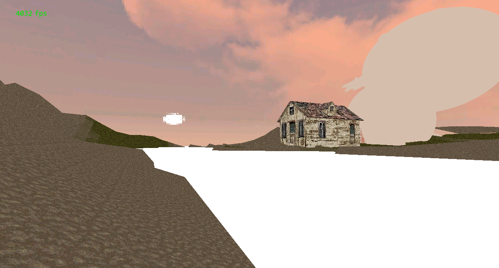

Featuring:
- No shading
- No postprocessing
- 1/8th resolution textures, with high compression
- 1-byte color components (GL_R3_G3_B2)
- No mip-mapping
- No transparency (only ordered dithering)
- Lowest model and terrain LODs
- An appropriately-themed website to showcase it
